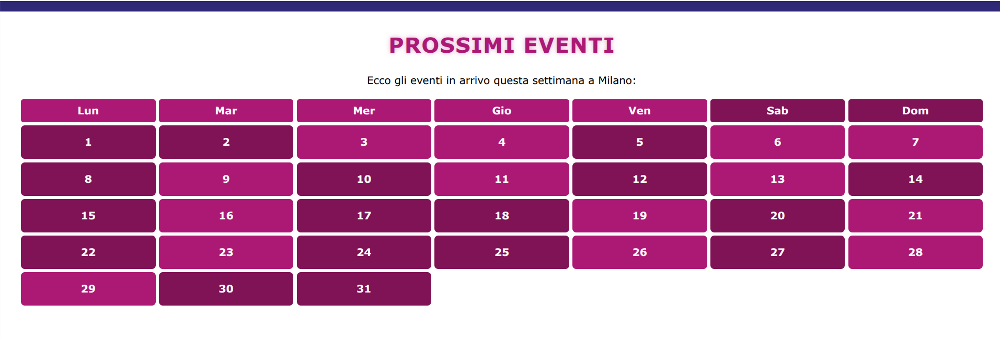

Luci di Milano
Technical Pitch for the web communication project
Project Idea
- Create a platform that collects events happening in Milan;
- Provide a quick guide for visitors and locals;
- Integrate an interactive calendar and image gallery of the events
Technology Used:
- HTML5 – semantic structure for sections
- CSS3 – responsive design, grids, animations
- JavaScript – image slider, clickable calendar
- Reveal.js – used for this interactive pitch presentation
Technical Implementation:
- Use of separate sections for content: Who We Are, Proposals, Events, Contact;
- Use of CSS Grid layout for the "Proposals" section;
- Introduction of the image slider with autoplay and navigation arrows;
- Implementation of an interactive calendar with clickable days using JavaScript
- Use of a smooth scroll from menu to different sections
Code Quality:
- Semantic and readable HTML
- Organized and modular CSS
- Clear, commented JavaScript for interactions
- Responsive design tested across multiple viewports
What did I learn?
- Manage responsive layouts using CSS Grid and Flexbox;
- Enhance UX with interactive JavaScript features;
- Write modular and readable code;
- Design a visually coherent and modern layout
Future Implementations
- Add user registration for personalized events;
- Implement notifications for upcoming events;
- Improve accessibility and SEO;
- Integrate interactive maps to locate events;
Homepage - Header

Homepage - Who We Are

Homepage - Proposals

Homepage - Calendar
Homepage - Gallery
Homepage - Contact
Conclusion
My aim was to create a complete project which showcases events with a modern and interactive interface, ready to evolve further.